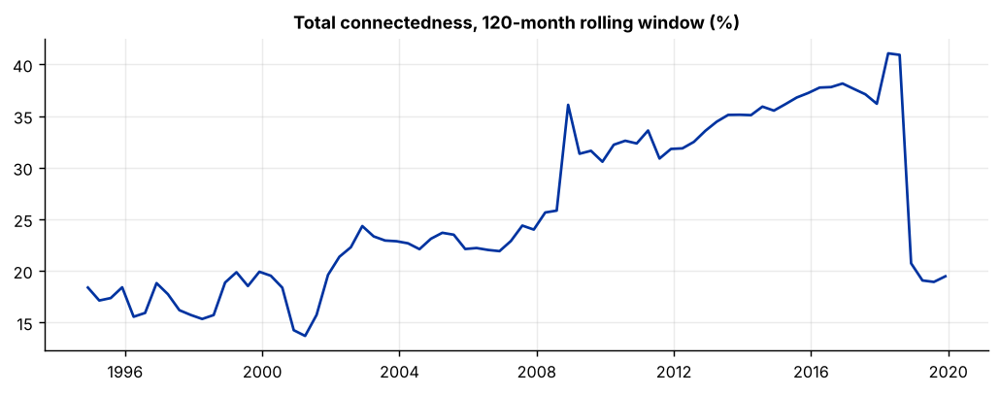

Step 1The question and the model
If we want to forecast the S&P 500 ten months ahead, how much of the uncertainty comes from its own shocks and how much from shocks to industrial production, the policy rate and the credit spread? Estimate a VAR(\(p\)) and compute the \(H\)-step generalised forecast-error variance decomposition of Pesaran and Shin:
where \(A_h\) are the moving-average coefficients and \(\Sigma\) the covariance of the VAR errors. Unlike the Cholesky decomposition, it does not depend on the order of the variables. The connectedness measures are
| Measure | Definition |
|---|---|
| From others, \(i\) | share of \(i\)'s variance due to shocks to the others: \(\sum_{j\ne i}\tilde\theta_{ij}\) |
| To others, \(j\) | contribution of \(j\) to the variance of the others: \(\sum_{i\ne j}\tilde\theta_{ij}\) |
| Net | to minus from; positive means a net transmitter |
| Total connectedness | the average of the "from others" column: how much of the system's variance is due to cross-variable shocks |
Before you estimate anything
- Make the series stationary. Use returns, growth rates or changes, not levels.
- Pick the lag by BIC and the horizon in advance. A common horizon is 10 periods for daily data and 10 to 12 for monthly data.
- Remember what the result is. It describes forecast-error variance, which is a statement about predictability and not about causality.
How to write it: methods sentence
We measure connectedness with the Diebold and Yilmaz (2012, 2014) framework: a VAR with the lag length chosen by BIC, the generalised forecast-error variance decomposition of Pesaran and Shin (1998) at a ten-month horizon, and rolling windows of 120 months to show how connectedness changes over time.
Step 2Load the data
import warnings; warnings.filterwarnings("ignore")
import numpy as np, pandas as pd
import matplotlib.pyplot as plt
from statsmodels.tsa.api import VAR
d = pd.read_csv("returns.csv", parse_dates=["date"]).set_index("date")
names = ["sp500_return", "ip_growth", "d_fedfunds", "d_credit_spread"]
x = d[names]
print(f"{len(x)} months, {x.index[0]:%Y-%m} to {x.index[-1]:%Y-%m}")
print(x.describe().loc[["mean", "std"]].round(3).to_string())420 months, 1985-01 to 2019-12
sp500_return ip_growth d_fedfunds d_credit_spread
mean 0.705 0.149 -0.016 0.000
std 3.537 0.608 0.192 0.169How to read it
The four series are already stationary: stock returns and industrial-production growth, and the monthly changes in the federal funds rate and the credit spread. The credit spread is in percentage points, the stock return in percent.
Step 3Step 1: The VAR and the connectedness table
sel = VAR(x.values).select_order(6); p = max(1, sel.selected_orders["bic"]); res = VAR(x.values).fit(p)
H = 10
def gfevd(res, H):
A = res.ma_rep(H - 1); S = np.asarray(res.sigma_u); k = S.shape[0]; th = np.zeros((k, k))
for i in range(k):
den = sum(A[h][i] @ S @ A[h][i] for h in range(H))
for j in range(k):
th[i, j] = sum((A[h][i] @ S[:, j]) ** 2 for h in range(H)) / (S[j, j] * den)
return th / th.sum(1, keepdims=True)
th = 100 * gfevd(res, H)
tab = pd.DataFrame(th, index=names, columns=["from " + n for n in names]); tab["from others"] = th.sum(1) - np.diag(th)
tab.loc["to others"] = list(th.sum(0) - np.diag(th)) + [(th.sum() - np.trace(th)) / len(names)]
print(f"VAR({p}), horizon {H}\n"); print(tab.round(1).to_string())VAR(1), horizon 10
from sp500_return from ip_growth from d_fedfunds from d_credit_spread from others
sp500_return 84.0 1.3 0.1 14.6 16.0
ip_growth 3.9 88.9 2.9 4.4 11.1
d_fedfunds 5.4 4.9 76.7 13.0 23.3
d_credit_spread 23.9 0.6 2.4 73.1 26.9
to others 33.2 6.8 5.3 32.1 19.3How to read it
Read row by row. 84% of the variance of the ten-month forecast error of stock returns comes from its own shocks, and 16% from the other three variables, mostly the credit spread (14.6%). The credit spread is the most exposed variable: 27% of its variance comes from the others, mainly from stock returns (23.9%). The total connectedness is 19.3%: about a fifth of the variance of the system comes from cross-variable shocks, and the rest from own shocks. The system is therefore not highly connected.
Step 4Step 2: Who transmits and who receives
to_ = th.sum(0) - np.diag(th); from_ = th.sum(1) - np.diag(th)
roles = pd.DataFrame({"to others": to_, "from others": from_, "net": to_ - from_}, index=names).round(1)
roles["role"] = np.where(roles["net"] > 0, "net transmitter", "net receiver")
print(roles.to_string())to others from others net role sp500_return 33.2 16.0 17.2 net transmitter ip_growth 6.8 11.1 -4.4 net receiver d_fedfunds 5.3 23.3 -18.0 net receiver d_credit_spread 32.1 26.9 5.2 net transmitter
How to read it
Stock returns (net +17.2) and the credit spread (+5.2) transmit more than they receive; the federal funds rate (−18.0) and industrial production (−4.4) receive more than they transmit. The federal funds rate is a net receiver in these monthly data, which is consistent with the Federal Reserve responding to markets and activity. The roles are about the variance of forecast errors and do not show that markets cause changes in policy.
Step 5Step 3: How connectedness changes over time
w = 120; roll = []
for s0 in range(0, len(x) - w + 1, 4):
r_ = VAR(x.values[s0:s0 + w]).fit(p); t_ = gfevd(r_, H)
roll.append((x.index[s0 + w - 1], 100 * (t_.sum() - np.trace(t_)) / len(names)))
roll = pd.Series(dict(roll))
fig, ax = plt.subplots(figsize=(8, 3.2)); ax.plot(roll); ax.set_title("Total connectedness, 120-month rolling window (%)"); plt.tight_layout(); plt.show()
print("minimum", round(roll.min(), 1), roll.idxmin().strftime("%Y-%m"), " maximum", round(roll.max(), 1), roll.idxmax().strftime("%Y-%m"))minimum 13.7 2001-04 maximum 41.1 2018-04

How to read it
Total connectedness is not constant. It varies between about 14% and 41% across the rolling windows, and is lowest in the window ending in April 2001 (13.7%) and highest in the window ending in April 2018 (41.1%), a window that contains the financial crisis of 2008–09. Connectedness tends to rise in crises, when shocks spread across markets. Rolling windows move slowly, since each one overlaps most of the next, so do not read the date of the peak as the date of an event.
Step 6What to report in the paper
Report the VAR lag and how you chose it, the horizon, the full connectedness table, the directional measures, and the rolling index with the window length. Show that the main results do not change when you change the horizon (for example 5 and 20) and the window (for example 60 and 200).
How to write it: results
Table 3 gives the connectedness table for a VAR(1) with a ten-month horizon. Total connectedness is 19.3%: most of the forecast-error variance of each variable comes from its own shocks. Stock returns and the credit spread are net transmitters (to others 33.2% and 32.1%), while the federal funds rate is the largest net receiver (−18.0 points). Rolling-window connectedness varies between 14% and 41%, and is highest in windows that contain the financial crisis.
Step 7Common mistakes
Mistakes to avoid
- Using levels of non-stationary series. The VAR and the decomposition are for stationary data.
- Treating connectedness as causality. It is a statement about forecast-error variance.
- Using a Cholesky order without a reason. The generalised decomposition avoids the order but not the issue of non-orthogonal shocks.
- Not showing sensitivity. The result depends on the horizon, the lag and the window.
- Reading a rolling peak as an event date. The window is a long average.
- Comparing systems with different numbers of variables. Total connectedness depends on the number of variables.
- Ignoring estimation error. The table has no standard errors; bootstrap if the claim depends on small differences.
- Very short windows. A VAR with 4 variables and 12 lags in a 60-month window has few degrees of freedom.